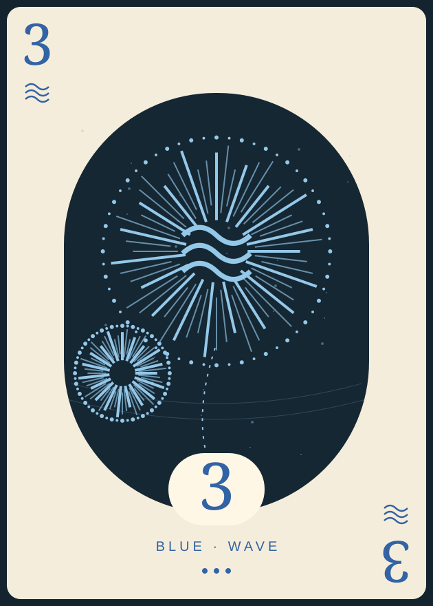
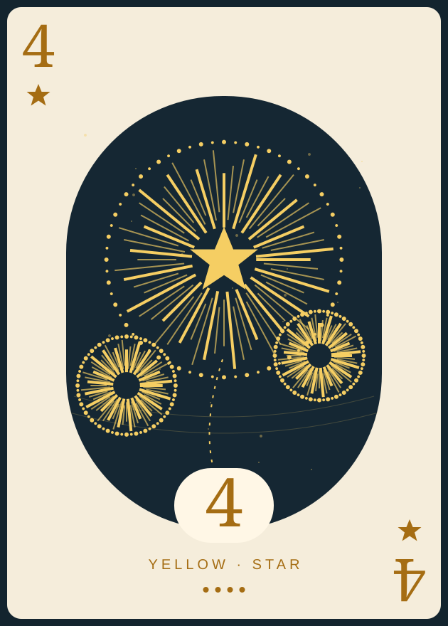
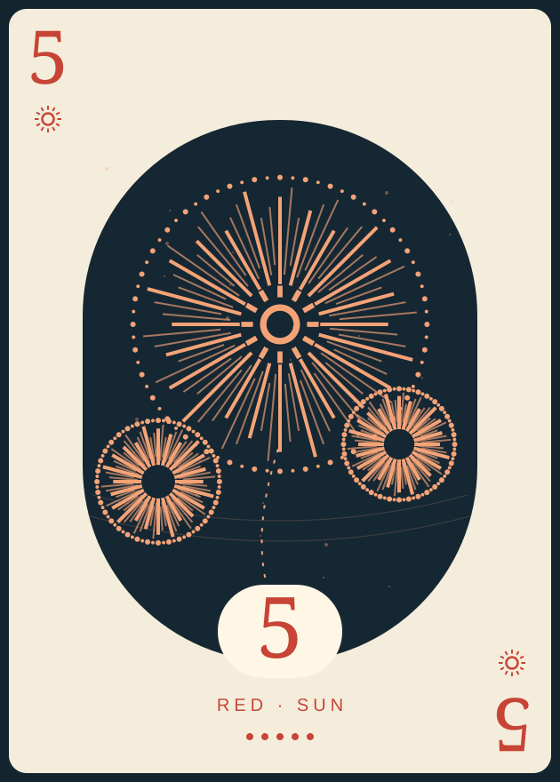

Print a test first.
Pick the alignment test. Match your paper size, use portrait, 100% / actual size, turn background graphics on and headers and footers off. For duplex, flip on the long edge.
✳ A COOPERATIVE GAME, REIMAGINED ON PAPER
Five colours. One shared sky. Make your own Hanabi set with original artwork, a few sheets of paper, and a table of friends.



✳A SMALL SHOW.01 / THE COLLECTION
Colour, shape, and a number.
Easy to read. Made to hold.
02 / FROM SCREEN TO TABLE
A complete set, with the details worked out.
You bring the paper. We’ll bring the fireworks.
Offsets move the backs as viewed from the back of the sheet. Compare your test print against a light.
Your browser opens the print dialog. Choose “Save as PDF” to keep a copy.
Actual-size cards · crop marks · mirrored duplex backs
Pick the alignment test. Match your paper size, use portrait, 100% / actual size, turn background graphics on and headers and footers off. For duplex, flip on the long edge.
Print on opaque cardstock, or use ordinary paper with identical opaque sleeves and backing cards. Align the crop marks and cut to 63 × 88 mm. No card should be identifiable from the back.
Print the token sheet separately, or find 8 clue markers and 3 fuse markers. Put out all 50 cards. Keep your own cards facing away from you. Let the show begin.
Full decks use six sheets, with fronts and backs interleaved into twelve PDF pages. The last sheet has five cards; its backs mirror the occupied slots. Separate fronts-only and backs-only jobs keep the same sheet order. For manual duplex, test your printer’s feed direction and stack order first. Backs have up to ±5 mm of calibration. Crop marks need a printable area within 4 mm of the paper edge on Letter. Keep saved PDFs at actual size too. Colours vary between printers; suit names and symbols remain readable in monochrome. The token sheet is single-sided and is printed as a separate job.
03 / TOGETHER, BY A LITTLE LIGHT
You can see everyone’s cards except your own. Help each other build five fireworks, counting up from 1 to 5 in each colour.
Read the original rules ↗Spend a clue marker. Pick one teammate, then point out every card of one colour or one value in their hand. The clue must match at least one card.
If a clue marker is spent, discard a card face up to recover one. Draw a replacement without seeing its front.
Play a card. Each colour begins at 1 and needs the next number. A mistake discards the card and uses a fuse. A successful 5 restores a clue, up to eight. Draw a replacement.
For 2–3 players, deal five cards each; for 4–5, deal four. Keep the faces hidden from their owners. Start with eight available clues and three unused fuses. Take turns clockwise, choosing one action each. Keep discards visible and communicate card information through clues. After the last draw, everyone takes one more turn, including the player who drew it. Add the highest number in each firework for a score out of 25. Completing all five ends the game immediately with 25; using the third fuse ends it immediately in defeat.
MADE TO BE MADE YOURS
Original vector artwork and the complete print studio, released under GPLv3. No account, no checkout. Just a shared project and a little ink.